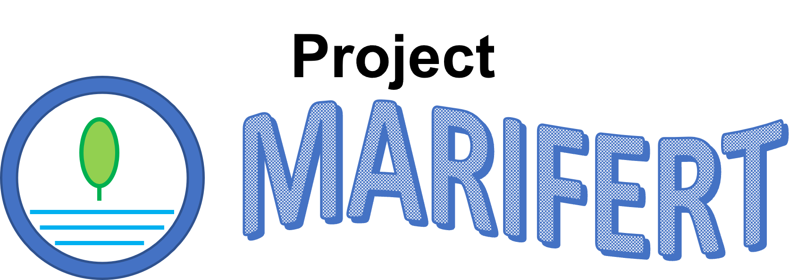
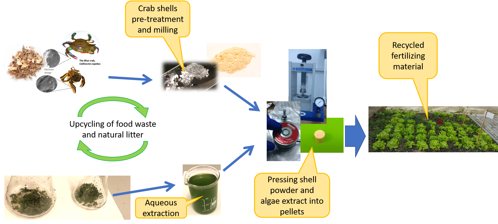

Blue bioeconomy approach to wasted marine biomass - an innovative fertilizer for green economy and agriculture (acronym MARIFERT)
Funder: Babes̗-Bolyai University
Competition: Grants for Young Researchers 2019/2020
Duration: 1.6.2020 - 10.9.2022
Principal investigator: Dr. Fran Nekvapil
Project scope
Principal investigator: Dr. Fran Nekvapil
Project scope
This project will prospect a solution to the problems outlined above, conduct fundamental experiments on loading of crab shell micropowder with algal and marine plant extract, and propose a novel, environmentally friendly, form of fertilizer or plant growth stimulant carrier for the agriculture. The medium-scale production (> 5 kg total product) will also be attempted, and the most feasible design promoted (Figure 1). Furthermore, in order to reduce future logistics costs, the procedures for production of the fertilizer complex will be adapted in such a way to enable the production of crab shell-algae extract complex at local facilities close to raw materials sources.

Objectives
- Conducting fundamental research on crab shell coarse or micro-powder and extracts obtained by heat treatment of algal and marine plant biomass (knowledge accumulation)
- Prospecting the dynamics of combining the shell powder and algal extracts, and subsequent release of loaded material (nutrients and growth stimulants) from the shell powder into the new environment, mediated by water
- Prospect the feasibility and real-world technical challenges by producing medium scale quantity of 5 kg of new fertilizer complex, ready to be used on planted areas; dissemination of obtained knowledge and promotion of UBB and other involved institutions
Achievements
- Accumulated knowledge base on current findings on the value of aquatic waste (crab shells and seaweed) as fertilizing material, and exploring current EU legislation on biofertilizers.
- Two research articles, published in journals Materials and Sustainability.
- Two dissemination workshops, at the Babes̗-Bolyai University (June 2021) and at the University of Dubrovnik (October 2021), described in more detail on the website of the BlueBioSustain project (here).
- Technical design for crab shell processing probed, conclusions drawn on the process improvement.
Contact

Dr. Fran Nekvapil - Project Leader (PL)
Fran is a researcher at the Faculty of Physics, Babes̗-Bolyai University (Romania) and at the Nat. Inst. for Research and Development of Isotopic and Molecular Technologies (Romania). His mainstream expertise revolves around spectroscopy methods, especially Raman spectroscopy applied to research of biogenic materials and metallic nanomaterials, in conjunction with other methods such as electron microscopy, diffraction and other.
email: fran.nekvapil@ubbcluj.ro